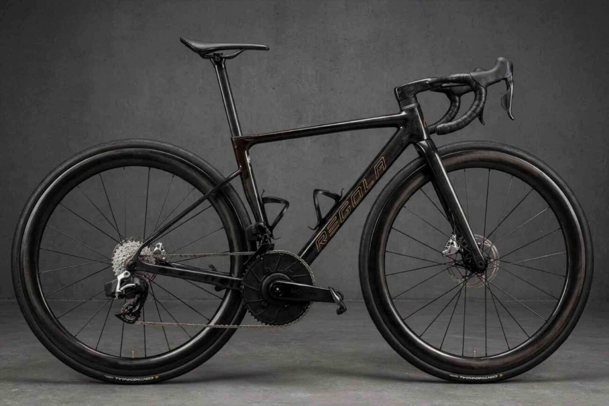

Route · Course
C01
La route, redéfinie.
Le vélo de course qui redéfinit le concept de route. Triangle arrière compact et avant allongé pour une conduite vive, précise, réactive.
- Cadre
- 850 g · taille 54
- Usage
- Route, course
- Signature
- Triangle arrière compact